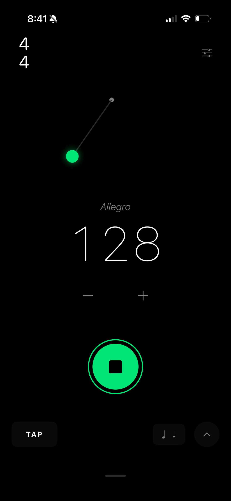

음악가가 진짜로 신뢰하는 메트로놈.
샘플 단위로 정확한 타이밍, 프로급 리듬 도구, 그리고 무대와 스튜디오에 어울리는 완성도.
곧 App Store에 출시됩니다
클릭을 위해 설계했습니다
집에서, 스튜디오에서, 무대에서 타이밍을 중요하게 여기는 현역 음악가를 위해 설계했습니다.
샘플 단위로 정확한 타이밍
전용 오디오 스케줄링. 드리프트 없이. 끊김 없이. 연주 도중 뜻밖의 상황 없이.
혼합 박자 & 폴리리듬
5/8 → 7/8 → 4/4를 자유롭게 연결하세요. 3:2, 4:3, 5:4를 여러 마디에 걸쳐 정확히 맞물리도록 레이어하세요.
Human Feel
격자가 아니라 실제 드러머처럼 숨 쉬는 섬세한 마이크로 타이밍 변화.
MIDI 클럭 & Ableton Link
하드웨어, 앱, 다른 기기와 동기화하세요. 스튜디오에서든 무대에서든 실전에 바로 쓸 수 있습니다.
Apple Watch & Live Activities
손목에서 재생을 제어하세요. Lock Screen에서 템포를 한눈에 확인하세요.
정교하게 만든 11가지 테마
다크 5종, 라이트 5종, 그리고 시스템 테마. 어두운 공연장을 위한 Stage Mode. 커스텀 클릭 사운드.